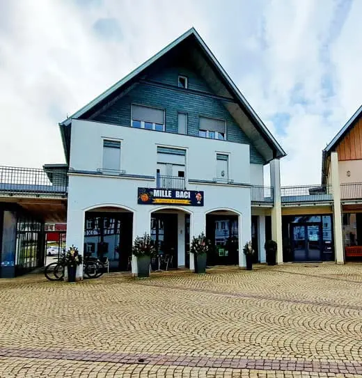
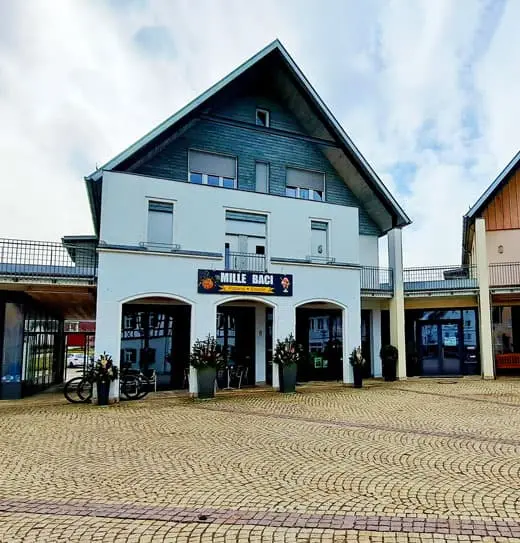
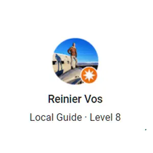

Wir sind stolz darauf, Ihnen authentische italienische Küche in gemütlicher Atmosphäre zu bieten.
siehe mehr 

Das Mille Baci ist eine sehr gute Adresse wenn man in Gerstetten lecker essen möchte. Egal ob Pizza oder Pasta, es ist für jeden Geschmack etwas dabei. Die vielen verschiedenen Eissorten, vorallem im Sommer muss jeder mal probiert haben. Ich komme gerne wieder.
Jessy
Das Mille Baci hat eine fantastische Qualität und sehr leckere Pizza und Pasta wie beim Italiener.
Einfach herrlich
Schmackhafte Eissorten. Sehr freundliches Personal.
Kann ich jedem empfehlen.
Damaris
Gerstetten isn't really the nicest of German places, but this restaurant is the exception. On the city square they have a nice terras to enjoy the good italian food or their excellent desserts.
Reinier Vos
Sehr freundliche Bedienung, die Pizzen waren gut und der gemischte Salat hatte ein lecker Dressing. Das Eis zum Nachtisch war superlecker. Preis-/Leistung absolut okay. Sehr schade, dass so wenig los war. Sie haben mehr verdient!!

Christine Baab
Nulla non pulvinar tellus. Aliquam erat volutpat.